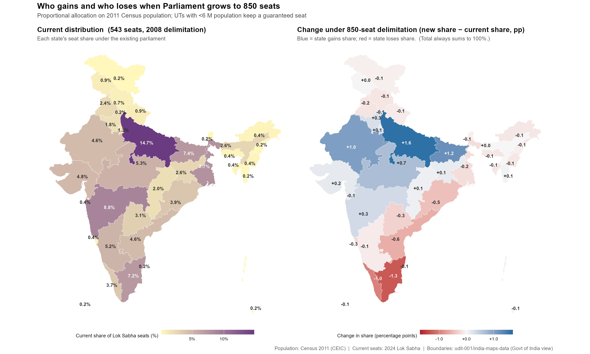
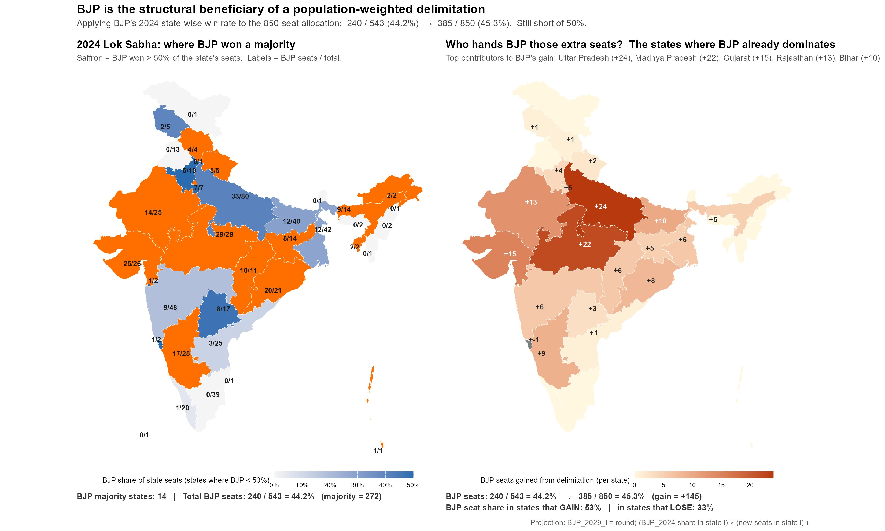

Delimitation Math
A delimitation exercise — evaluating the number of existing seats, and redrawing the constituency limits — is due for both the Lok Sabha (the lower house) of the Government of India (GoI) and the state legislatures. While Article 81 of the constitution calls for a distribution of Lok Sabha seats by the state's population share, Article 82 creates a provision for a Delimitation Commission tasked to carry out this exercise after the release of every decadal census.
Independent India has witnessed three successful completions of this exercise. The first one, in 1951, was based on population estimates, even before the first census was released. The next two were based on the census of 1961 and 1971. After completion of the third one in 1976, the process was frozen for 25 years by the 42nd Amendment of the Constitution. The reason made sense: since population was yet to stabilize across states and efforts were made to control population, a delimitation on top of it would only create perverse incentives for the states doing reasonably well on this front.
A similar freeze was applied in 2001, again for 25 years, citing similar reasons vide the 84th Amendment. However, within states, constituencies were redrawn to reflect population densities, keeping the state's allocation of Lok Sabha seats unchanged at 543.
The freeze is scheduled to expire in 2026. The existing law requires a complete delimitation exercise to be carried out based on the first census completed after 2026. Since the 2021 census was delayed and the current census is scheduled to complete in early 2027, the independent delimitation commission is mandated to use this census to redraw the electoral maps.
All this would be automatic if the ruling party of the day could wait for the completion of the ongoing census. However, that would delay the delimitation exercise further and the 2029 Lok Sabha elections could not be conducted based on the redrawn limits. To prevent the delay, the GoI brought the 131st Constitutional Amendment Bill and clubbed this with a women's reservation bill. The proposal was to increase the total number of Lok Sabha seats to 850 and reserve 33 percent of the seats for women, and to evaluate each state's seat share based on the 2011 census. However, this bill did not make it through a super-majority mandate.
While I agree that the women's reservation could not be further delayed, it is not clear why this was necessarily clubbed with delimitation. The women's reservation bill for Lok Sabha seats was already passed in 2023 and the current bill was expected to operationalize it. The GoI could bring another bill to operationalize the same within the current strength of 543 seats. The 2029 Lok Sabha elections could be conducted with the women's reservation operationalized.
While all of this is old news, it is imperative to understand which states would really benefit from delimitation, and also why it could not pass the required mandate. The following maps display the proportional representation of each state before and after the proposed delimitation. The map on the left shows the current proportions. The map on the right shows the percentage gain or loss in representation from the current position after the delimitation exercise. I use the following formula to distribute the proposed 850 seats across states, as prescribed in Article 81 of the Constitution.

It is clear that the South loses representation and the so-called Hindi belt gains. Tamil Nadu loses 1.3 percent and Kerala loses 1 percent of representation while Uttar Pradesh gains the most, proportionally.
Why does this happen? While the South has been ahead in terms of population control and contributed most to the nation's GDP, the Hindi belt has perpetually lagged behind. The fertility rates have remained consistently above replacement levels in the relatively poorer states of Bihar and Uttar Pradesh. By the reasoning of the freeze in 1976 and 2001, population has not stabilized in these states for sure. A GDP based measure of delimitation, as proposed by some of the Southern leaders, would also likely be unconstitutional — it's not one person, one vote, one value.
If delimitation is inevitable after the freeze expires, why the hurry? And why club it with the women's reservation bill to create a smoother passage? The following set of maps partially answers this question. The map on the left panel shows the proportion of seats won by the BJP in the 2024 Lok Sabha elections. The saffron-colored states are where the BJP won a majority of the seats. Of course, the Hindi belt contributed the most to the BJP's electoral success, although Uttar Pradesh was a disappointment. Keeping the seat-proportions won across states and UTs fixed, the map on the right panel shows the additional seats that the BJP could win if the currently proposed delimitation were to happen, based on the 2011 census. While the party won 44.2% of the seats in 2024, a Hindi-belt biased delimitation, and similar electoral performance would bring the seat share to 45.3%.

As I mentioned, this is only a partial answer because electoral gain would be marginal. Of course, the chances of electoral loss for the incumbent are non-existent if the delimitation bill had passed the Lok Sabha successfully. It would be a fool-proof answer if Uttar Pradesh is expected to flip in 2029 in favor of the BJP, and is part of the ruling party's calculations.
The other part of the answer may be hiding in the way the electoral maps are likely to be redrawn; if the population has migrated or realigned in ways that may favorably impact the electoral math for the incumbent, making them act on it as early as possible. However, with the current set of bills blocked by the opposition, it is more likely that the 2029 elections would be fought over the current distribution of 543 seats. The GoI should delink and operationalize the 33% reservation for women. It appears that the women's reservation bill was simply used to push the delimitation bill with minimum opposition. A further delay on that front is unwarranted.